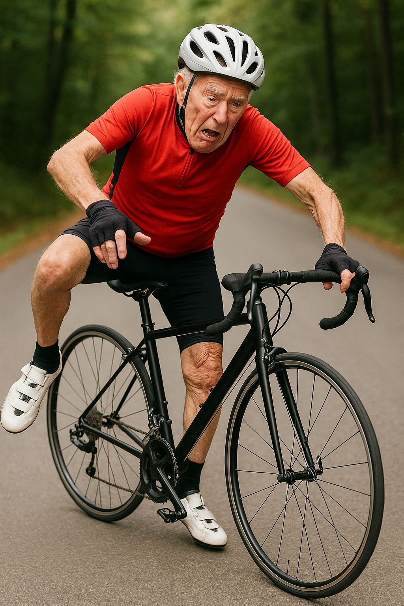
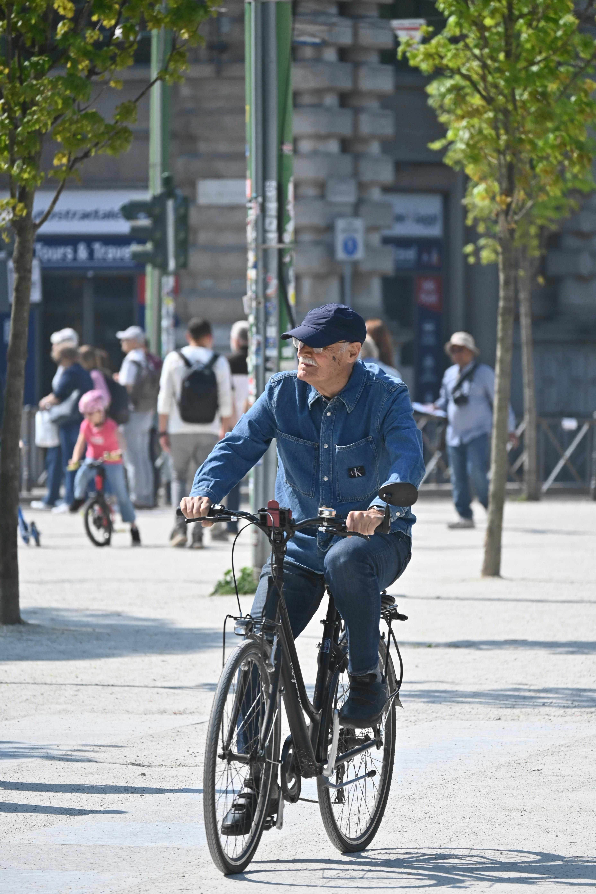
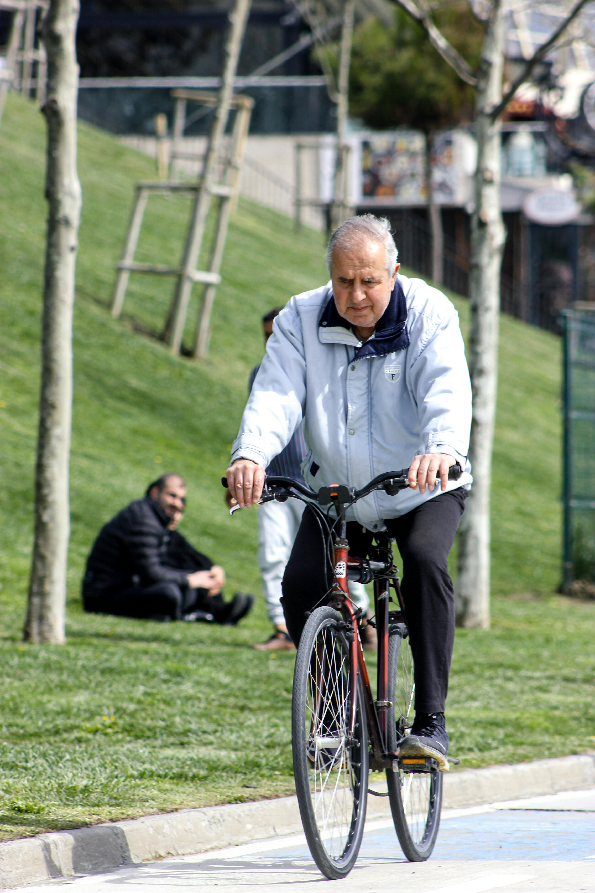
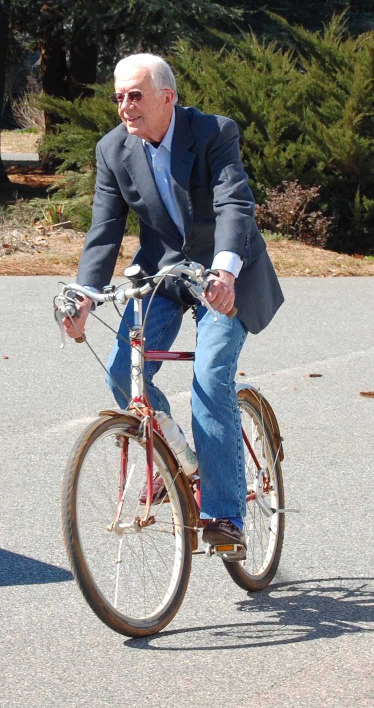
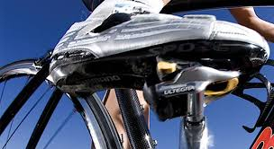
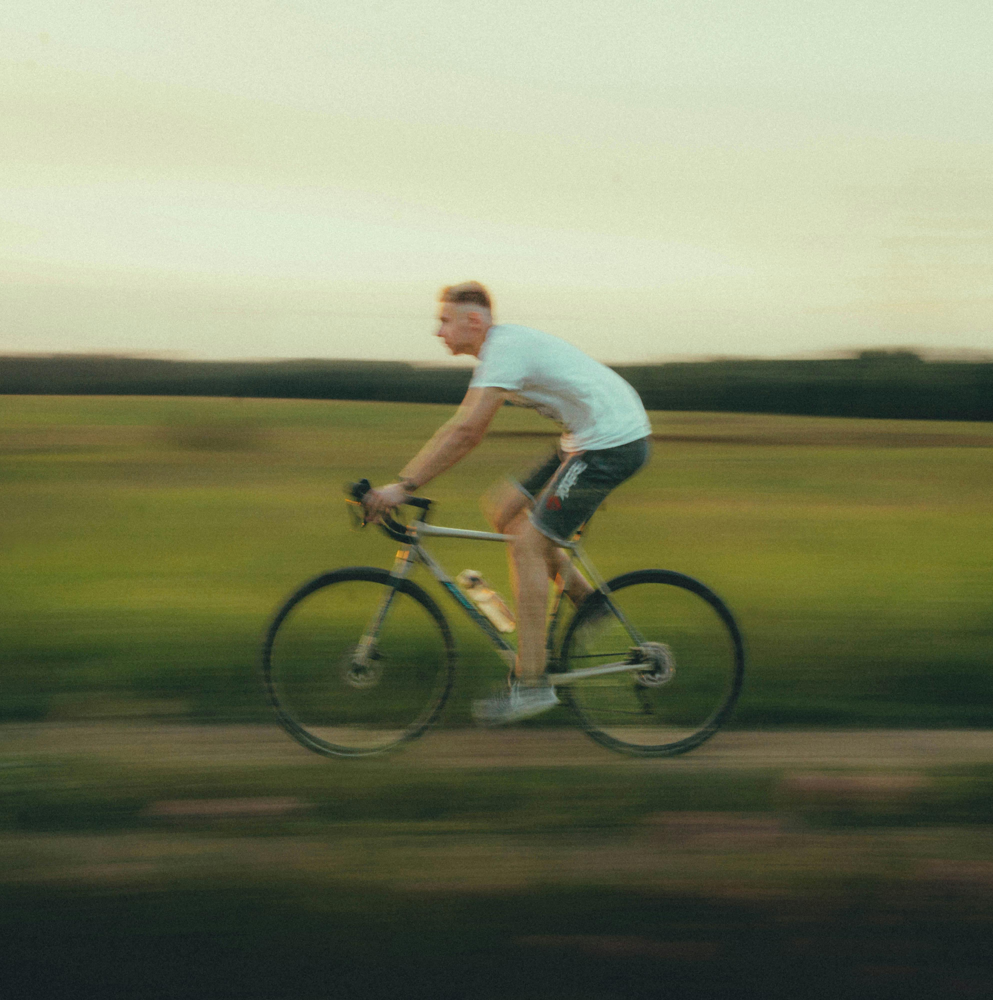

A Safer Ride for Older Cyclists
For many older riders, mounting a bicycle becomes the hardest part of the ride. Reduced hip flexibility makes swinging a leg over the high crossbar awkward, while decreased balance increases the risk of tipping over before you even begin to pedal. A fall during mounting is not just discouraging—it can be dangerous.

This new patented bicycle design solves that problem. The top bar of the frame—the crossbar—can be quickly lowered from the handle post, creating an open space to step into the bike with ease. Once seated, the rider simply lifts the crossbar back up and secures it in place.
The result:
- No more awkward leg swings over a tall frame.
- Improved safety when mounting and dismounting.
- Confidence for riders of all ages, especially those who may have limited flexibility or balance.
Invented by a lifelong cyclist in his 90s after he fell while trying to mount his bike, this innovation ensures that age and mobility challenges don't mean giving up the joy of cycling.
Stronger and Lighter Than "Women's" Style Bikes
Traditional step-through or so-called "women's style" bikes address mounting issues by removing the crossbar entirely or adding heavy reinforcements. This design sacrifices stiffness and strength, often requiring extra material and weight to compensate for the weaker frame.

Our patented lowerable crossbar takes a different approach. Instead of eliminating strength, it preserves the full triangular frame geometry that serious riders rely on. Once raised back into position, the crossbar locks solidly into place, restoring the same strength and handling of a classic diamond-frame bicycle—without the unnecessary bulk of double crossbars or heavy tubing.

The benefits are clear:
- Full frame integrity for better handling, braking, and power transfer.
- Reduced weight compared to traditional step-through reinforcements.
- Durability and stiffness for confident everyday riding.
This design gives riders the best of both worlds: easy step-through mounting with the lightweight strength of a true performance bicycle.
Easy-to-Use, No-Tools Mechanism

Ease of use is at the heart of this innovation. The crossbar can be lowered and raised back into position in seconds—no tools, no complicated steps. The latch is designed to be intuitive, secure, and impossible to release by accident while riding.
When the crossbar is swung down, it hinges neatly toward the seat post. A built-in magnet holds it in place so it won't flop around if you need to roll the bike a short distance without locking it back up. This small detail makes a big difference in everyday convenience.
Key features:
- Simple, tool-free operation—done in seconds.
- Positive locking system that cannot release accidentally.
- Magnetic anchor to keep the bar stable when lowered.
Practical, reliable, and safe—this is design that works for every rider, every ride.
High-Performance Cycling with Modern Demands

Older riders don't just want comfort—they want performance. Many still push themselves with long rides, challenging routes, and advanced equipment like clip-in cycling shoes. For these riders, a flimsy step-through frame simply isn't good enough.

This patented lowerable crossbar system makes it possible to have both: effortless mounting and dismounting and a lightweight, high-strength frame for serious riding. Once locked in place, the crossbar restores the stiffness and handling of a traditional road frame, giving riders the responsiveness they expect.
Why it matters for performance cyclists:
- Compatible with clip-in shoes—mount safely without wobbling or tipping.
- Full diamond-frame rigidity for aggressive riding styles.
- Lightweight design suitable for road bikes, e-bikes, and performance hybrids.
Patented Technology
This revolutionary bicycle design is protected by
U.S. Patent 12195134.
Patent Document Pages
Contact
For more information, contact us at info@lifetimebicycles.com